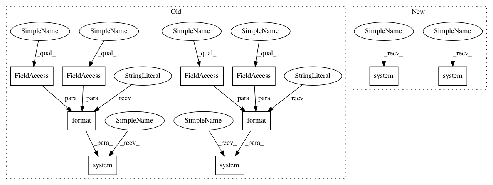

97bcda32d46ac2c2d8f97f9fe44ef8cdc3253710,pynets/registration/register.py,DmriReg,tissue2dwi_align,#DmriReg#,687
Before Change
self.gm_in_dwi))
// Threshold CSF to binary in dwi space
os.system("fslmaths {} -mas {} {} 2>/dev/null".format(self.csf_mask_dwi, self.csf_mask_dwi_bin,
self.csf_mask_dwi))
// Create ventricular CSF mask
print("Creating ventricular CSF mask...")
os.system("fslmaths {} -kernel sphere 10 -ero -bin {} 2>/dev/null".format(self.vent_mask_dwi,
self.vent_mask_dwi))
os.system("fslmaths {} -add {} -bin {} 2>/dev/null".format(self.csf_mask_dwi, self.vent_mask_dwi,
self.vent_csf_in_dwi))
print("Creating Corpus Callosum mask...")
After Change
nib.save(thr_img, self.csf_mask_dwi_bin)
// Threshold WM to binary in dwi space
os.system(f"fslmaths {self.wm_in_dwi} -mas {self.wm_in_dwi_bin} {self.wm_in_dwi} 2>/dev/null")
// Threshold GM to binary in dwi space
os.system(f"fslmaths {self.gm_in_dwi} -mas {self.gm_in_dwi_bin} {self.gm_in_dwi} 2>/dev/null")
// Threshold CSF to binary in dwi space
os.system(f"fslmaths {self.csf_mask_dwi} -mas {self.csf_mask_dwi_bin} {self.csf_mask_dwi} 2>/dev/null")
// Create ventricular CSF mask
print("Creating ventricular CSF mask...")
os.system(f"fslmaths {self.vent_mask_dwi} -kernel sphere 10 -ero -bin {self.vent_mask_dwi} 2>/dev/null")
os.system(f"fslmaths {self.csf_mask_dwi} -add {self.vent_mask_dwi} -bin {self.vent_csf_in_dwi} 2>/dev/null")
print("Creating Corpus Callosum mask...")
os.system(f"fslmaths {self.corpuscallosum_dwi} -mas {self.wm_in_dwi_bin} -sub {self.vent_csf_in_dwi} "
f"-bin {self.corpuscallosum_dwi} 2>/dev/null")
// Create gm-wm interface image
os.system(f"fslmaths {self.gm_in_dwi_bin} -mul {self.wm_in_dwi_bin} -add {self.corpuscallosum_dwi} "
f"-mas {self.B0_mask} -bin {self.wm_gm_int_in_dwi} 2>/dev/null")
return
def waymask2dwi_align(self, waymask):
In pattern: SUPERPATTERN
Frequency: 4
Non-data size: 10
Instances
Project Name: dPys/PyNets
Commit Name: 97bcda32d46ac2c2d8f97f9fe44ef8cdc3253710
Time: 2020-04-19
Author: dpisner@utexas.edu
File Name: pynets/registration/register.py
Class Name: DmriReg
Method Name: tissue2dwi_align
Project Name: dPys/PyNets
Commit Name: 97bcda32d46ac2c2d8f97f9fe44ef8cdc3253710
Time: 2020-04-19
Author: dpisner@utexas.edu
File Name: pynets/registration/register.py
Class Name: DmriReg
Method Name: tissue2dwi_align
Project Name: dPys/PyNets
Commit Name: 97bcda32d46ac2c2d8f97f9fe44ef8cdc3253710
Time: 2020-04-19
Author: dpisner@utexas.edu
File Name: pynets/registration/register.py
Class Name: DmriReg
Method Name: t1w2dwi_align
Project Name: dPys/PyNets
Commit Name: 97bcda32d46ac2c2d8f97f9fe44ef8cdc3253710
Time: 2020-04-19
Author: dpisner@utexas.edu
File Name: pynets/registration/register.py
Class Name: DmriReg
Method Name: gen_tissue
Project Name: dPys/PyNets
Commit Name: 97bcda32d46ac2c2d8f97f9fe44ef8cdc3253710
Time: 2020-04-19
Author: dpisner@utexas.edu
File Name: pynets/registration/register.py
Class Name: FmriReg
Method Name: gen_tissue